Map
Nearby locations
The 10 closest locations, measured in a straight line between the map markers (1 world unit is 1 metre), with the direction to go from here.
| Location | Kind | Region | Distance | Direction |
|---|---|---|---|---|
| Knarrebo | FNIX site | South Coast | 229 m | NW |
| Knarrebo Generators | FNIX site | South Coast | 281 m | NW |
| Sillavik Dumping Station | FNIX site | South Coast | 295 m | SW |
 Beredskapsförråd 120 Beredskapsförråd 120 | Bunker | South Coast | 362 m | SW |
 Sillavik Sillavik | Settlement | South Coast | 419 m | SE |
| Lännbacka | Settlement | South Coast | 424 m | N |
 Guteby Farm Guteby Farm | FNIX site | South Coast | 528 m | NE |
 Kållebyviken Control Point Kållebyviken Control Point | Control point | South Coast | 540 m | N |
| Sillavik Artillery Base Control Point | Control point | South Coast | 562 m | S |
| Småbåthamnen Data Center | FNIX site | South Coast | 593 m | E |
Safehouse
No safehouse here. The nearest one is Sillavik (South Coast), 144 m to the east.
Collectibles and markers nearby
Collectibles, schematic points, house photos, control points and beacons within 300 m of the location marker, nearest first. The last column is the internal place name the game files give the marker.
| Type | Name | Distance | Direction | Place |
|---|---|---|---|---|
| House Photo - Hisinganäset Village Sillavik | 152 m | E | Southcoast Hisinganäset Village Sillavik | |
 Survivor's Notes | Survivor's Note 05 | 223 m | NW | Southcoast Hisinganäset Villa Knarrebo |
Loot
The location's files list 113 loot crate spawn points (CLootCrateSpawnPoint). These are the crates your save counts for this location's loot progress.
Placed loot within 200 m that is closer to Sillavik Truck Repair Shop than to any other location (from the interactive map's Extra Locations layer).
| Category | Count | Breakdown |
|---|---|---|
| Weapons | 3 | Q2 3 |
| Items | 31 | Explosive Gas Tank 10, Gasoline 8, Emergency flare 4, Simple First Aid Kit 3, Standard First Aid Kit 3, Radio 2, Boombox 1 |
| Crate spots (map layer) | 146 | Ammo boxes 64, Equipment boxes 51, Apparel packs 26, Car hoods 3, Weapon boxes 2 |
CLootCrateSpawnPoint objects listed in the location files: what your save tracks for a location's loot progress. The crate spots (map layer) are every crate spot of the interactive map's loot layer within 200 m that is nearer to this location than to any other, whichever game file it comes from, so the two numbers rarely match. Neither means a crate is always there: the game may leave a spot empty.Weapons, attachments and other single items placed here:
| Item | Quality | Count |
|---|---|---|
| 12G Pump-Action (Worn) | Worn | 1 |
| HP5 (Worn) | Worn | 1 |
| Klaucke 17 (Worn) | Worn | 1 |
Missions
No mission text mentions Sillavik Truck Repair Shop by name. See the South Coast region page for the missions of the region.